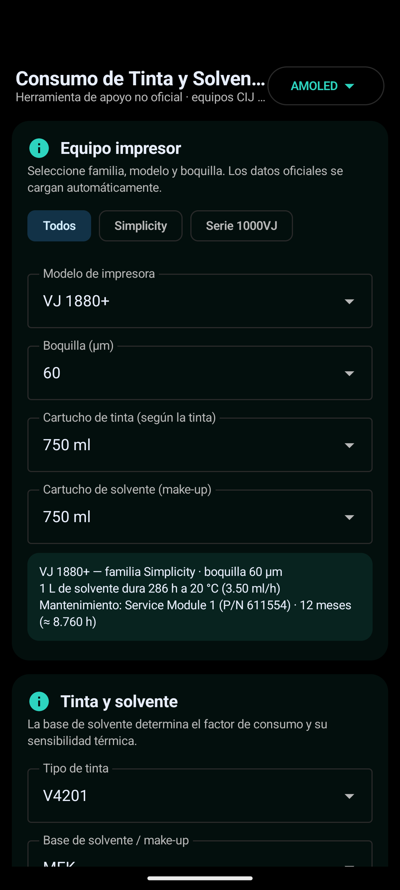
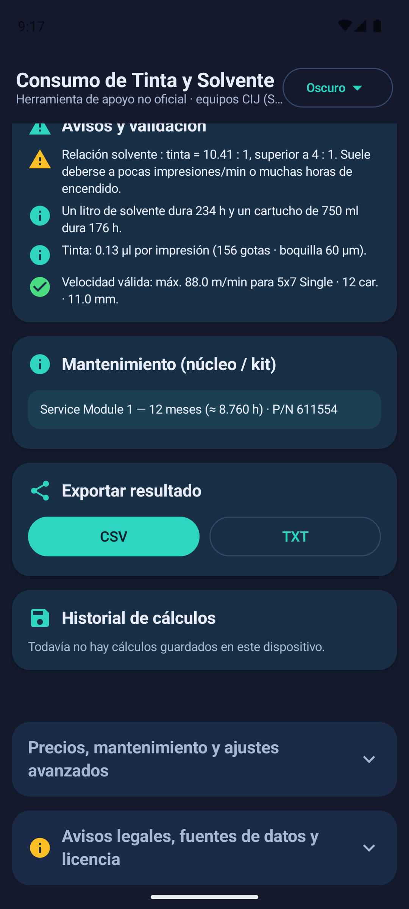
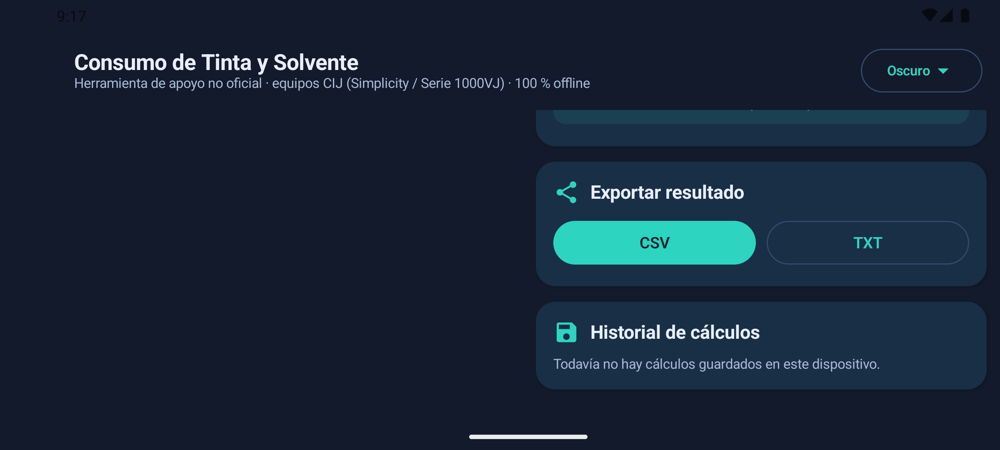
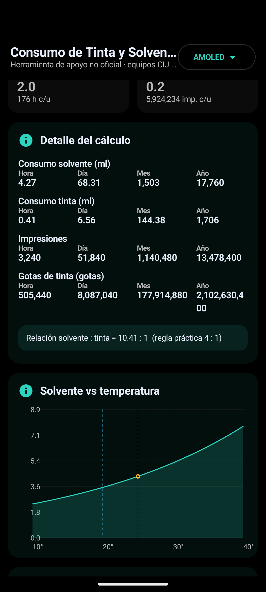

Solvente (make-up)
ml/hora, día, mes y año según la temperatura ambiente, la base química y los factores de la instalación.
Calculadora técnica para equipos Videojet Simplicity y Serie 1000VJ: solvente por temperatura, tinta por carácter, velocidad de línea, cartuchos y mantenimiento. Web autónoma y app Android nativa, 100 % sin internet.

Un único motor, el mismo en la web y en Android, alimentado con los modelos oficiales de cálculo.
ml/hora, día, mes y año según la temperatura ambiente, la base química y los factores de la instalación.
Gotas por mensaje según matriz, caracteres, líneas y stroke; ml por impresión y por período.
Velocidad máxima, cpi, dpi, ancho mínimo y máximo de caracteres para cada equipo y fuente.
Capacidades por tinta y modelo (700, 750, 1000, 5000 ml…) y el solvente asociado a cada tinta.
Módulo de servicio o núcleo, referencia (P/N) e intervalo oficial; fecha de cambio según producción.
Exportación a CSV y TXT, historial local de cálculos y configuración persistente.
Cada valor se contrasta automáticamente con las fichas oficiales publicadas por el fabricante.
| Modelo de cálculo | Qué aporta |
|---|---|
| CIJ Makeup Usage Model v14 | Consumo de solvente por temperatura y base química |
| CIJ TCO Calculator v35 | Gotas/carácter, gotas/litro, contenedores por tinta y mantenimiento |
| CIJ Line Speed Calculator v9.7 | Velocidad nominal, caracteres/seg, cpi y dpi por equipo y matriz |
Ejemplo validado: VJ 1880+ (60 µm) con tinta V4201 · 30 °C → 5,21 ml/h (documento oficial: 5,2 ml/h). Detalle completo en docs/DATOS.md.
Interfaz adaptable a teléfonos modernos y clásicos, tabletas y pantallas OLED/LCD.



Tres formas de usar la calculadora, todas sin conexión.
APK firmado, 1,8 MB, Android 14 o superior. Sin permisos de red.
Un único archivo HTML. Ábralo con doble clic en cualquier equipo, sin instalación.
Proyecto completo con documentación, pruebas y compilación automática (CI).
Historial de cambios y próximas mejoras del proyecto.
| Versión | Fecha | Cambios principales |
|---|---|---|
| 2.0.0 | 21/10/2026 | Limpieza total: sin módulos experimentales ni costes · 100 % offline · sin permisos de red |
| 1.2.0 | 20/10/2026 | Cartuchos por tinta y modelo · mantenimiento con P/N · notación compacta |
| 1.1.0 | 20/10/2026 | Familias Simplicity / Serie 1000VJ · boquillas por modelo |
| 1.0.0 | 19/10/2026 | Versión inicial: web offline, app Android, gráficos e informes |
Detalle completo: VERSIONES.md · cambios: CHANGELOG.md · próximas mejoras: ROADMAP.md